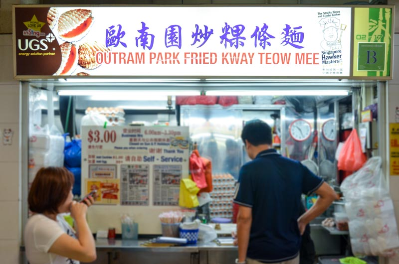

Food

Outram Park Fried Kway Teow Mee
Char kway teow (炒粿条; chao guo tiao in Mandarin) is a dish of flat rice noodles and tubular yellow wheat noodles fried in garlic, sweet soya sauce and lard, with ingredients such as egg, Chinese waxed sausage, fishcake, beansprouts and cockles.
One of the most famous char kway teow stalls in Singapore, Outram Park Fried Kway Teow Mee started out in the 1950s as a pushcart stall near the defunct Metropole Cinema (now Fairfield Methodist Church) before relocating to Outram Park, then to its current location at Hong Lim.
 CC19, DT9 :Botanic Gardens
CC19, DT9 :Botanic Gardens
 Price range: Average $5~
Price range: Average $5~
 Open 6AM⋅ Closes 3:30PM, Sunday Closed
Open 6AM⋅ Closes 3:30PM, Sunday Closed
 Phone number: 6737 4411
Phone number: 6737 4411
 Very Traditional. Delicious!!!
Very Traditional. Delicious!!!